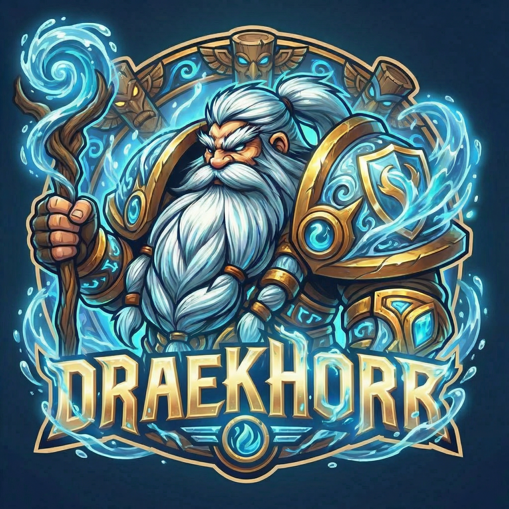

EU · NORMAL · WOW FOREVER
THEY BROUGHT BACK THE LEVELING.
I BROUGHT BACK THE HEALING.
I HEAL FASTER THAN HEALSTAPPEN DRIVES.
Back to level one. Same old totems. Still healing at full throttle.
EXPLORE THE LEGACY ↗
CHARACTER PROFILE
DRAEKHORR HEALSTAPPEN
Shaman · Dwarf
EU · Normal
LEVEL—
HONORABLE KILLS—
TALENTS—
MAK'GORA KILLS—
ITEM LEVEL—
Forever profile statistics will appear here when a verified data source is configured. No Retail statistics are reused.